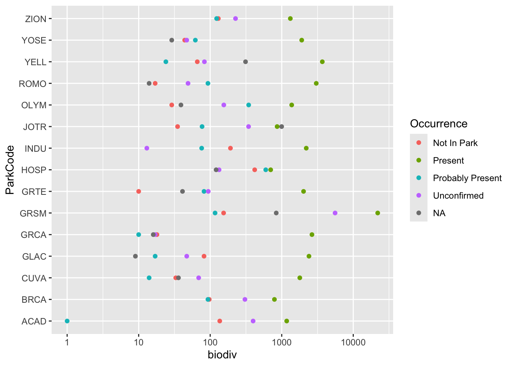
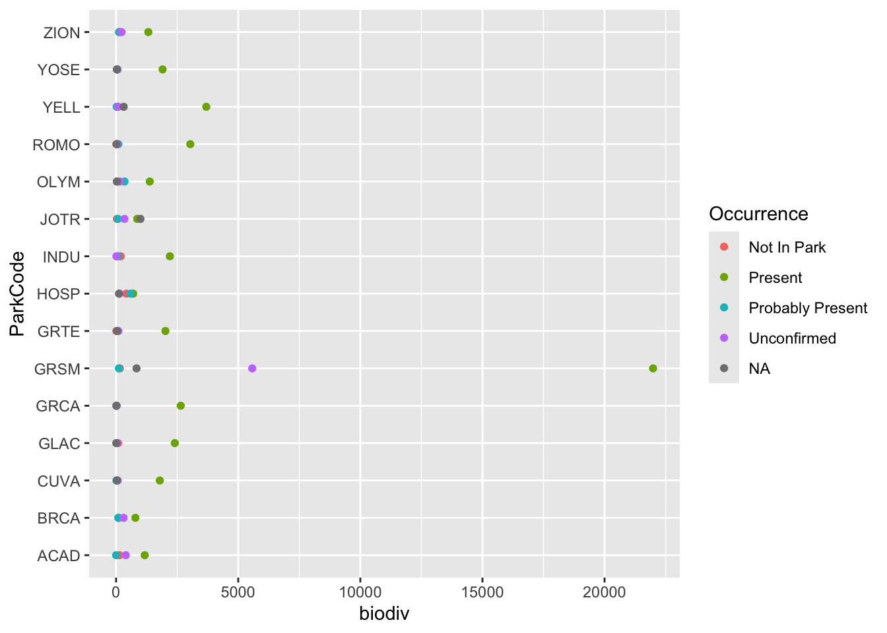
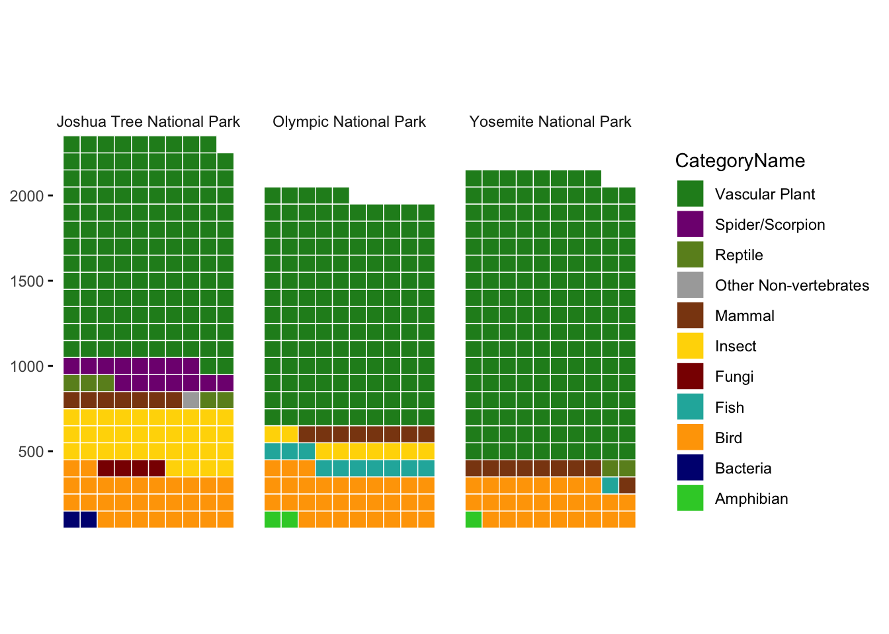

library(tidyverse) # ggplot, lubridate, dplyr, stringr, readr...
library(praise)
library(waffle)National Park Speciees
The Data
This week we’re exploring species at the most visited National Parks in the USA! NPSpecies contains species listed by National Parks maintained by National Parks Service (NPS). Given the size of the dataset, we’re focusing on the 15 most visited parks. The data comes from https://irma.nps.gov/NPSpecies/Search/SpeciesList.
The information in NPSpecies is available to the public. The exceptions to this are records for some sensitive, threatened, or endangered species, where widespread distribution of information could potentially put a species at risk.
An essential component of NPSpecies is evidence; that is, observations, vouchers, or reports that document the presence of a species in a park. Ideally, every species in a park that is designated as “present in park” will have at least one form of credible evidence substantiating the designation
If you are looking for more detailed information on the dataset, here is the glossary for column names, field options, and tag meanings: https://irma.nps.gov/content/npspecies/Help/docs/NPSpecies_User_Guide.pdf
To properly cite NPSpecies use the following: NPSpecies - The National Park Service biodiversity database. https://irma.nps.gov/npspecies/. Accessed date/time.
This data was accessed on September 2nd, 2024.
If you are interested in additional data, the curated dataset for all national parks is available at https://github.com/frankiethull/NPSpecies.
Thank you to f. hull for curating this week’s dataset.
species <- readr::read_csv('https://raw.githubusercontent.com/rfordatascience/tidytuesday/master/data/2024/2024-10-08/most_visited_nps_species_data.csv')species |>
distinct(ParkCode)# A tibble: 15 × 1
ParkCode
<chr>
1 ACAD
2 BRCA
3 CUVA
4 GLAC
5 GRCA
6 GRTE
7 GRSM
8 HOSP
9 INDU
10 JOTR
11 OLYM
12 ROMO
13 YELL
14 YOSE
15 ZION species |>
group_by(ParkCode, Occurrence) |>
summarize(biodiv = n()) |>
ggplot(aes(x = ParkCode, y = biodiv, color = Occurrence)) +
geom_point() +
scale_y_log10() +
coord_flip()
species |>
group_by(ParkCode, Occurrence) |>
summarize(biodiv = n()) |>
ggplot(aes(x = ParkCode, y = biodiv, color = Occurrence)) +
geom_point() +
coord_flip()
We filter so that the graph is easier to see. We consider only Joshua Tree (JOTR), Olympic (OLYM), and Yosemite (YOSE).
color_palette <- c(
"Mammal" = "#8B4513", # Dark brown
"Bird" = "#FFA500", # Bright orange
"Reptile" = "#6B8E23", # Olive green
"Amphibian" = "#32CD32", # Lime green
"Fish" = "#20B2AA", # Teal
"Vascular Plant" = "#228B22",# Forest green
"Spider/Scorpion" = "#800080",# Dark purple
"Insect" = "#FFD700", # Golden yellow
"Other Non-vertebrates" = "#A9A9A9", # Gray
"Fungi" = "#8B0000", # Dark red
"Bacteria" = "#000080" # Navy blue
)
species |>
#filter(Nativeness %in% c("Native", "Non-native")) |>
count(ParkCode, ParkName, CategoryName) |> #, Nativeness) |>
filter(n >= 10) |>
filter(ParkCode %in% c("JOTR", "OLYM", "YOSE")) |>
mutate(n = round(n /10)) |>
ggplot(aes(fill = CategoryName, values = n)) +
geom_waffle(color = "white", size = 0.25, n_rows = 10, flip = TRUE) +
facet_grid( ~ ParkName) +
scale_x_discrete() +
scale_y_continuous(labels = function(x) x * 100,
expand = c(0,0)) +
coord_equal() +
theme_minimal() +
theme(panel.grid = element_blank(), axis.ticks.y = element_line()) +
guides(fill = guide_legend(reverse = TRUE)) +
scale_fill_manual(values = color_palette)
species |>
distinct(CategoryName)# A tibble: 16 × 1
CategoryName
<chr>
1 Mammal
2 Bird
3 Reptile
4 Amphibian
5 Fish
6 Vascular Plant
7 Crab/Lobster/Shrimp
8 Slug/Snail
9 Spider/Scorpion
10 Insect
11 Other Non-vertebrates
12 Non-vascular Plant
13 Fungi
14 Chromista
15 Protozoa
16 Bacteria praise()[1] "You are magnificent!"